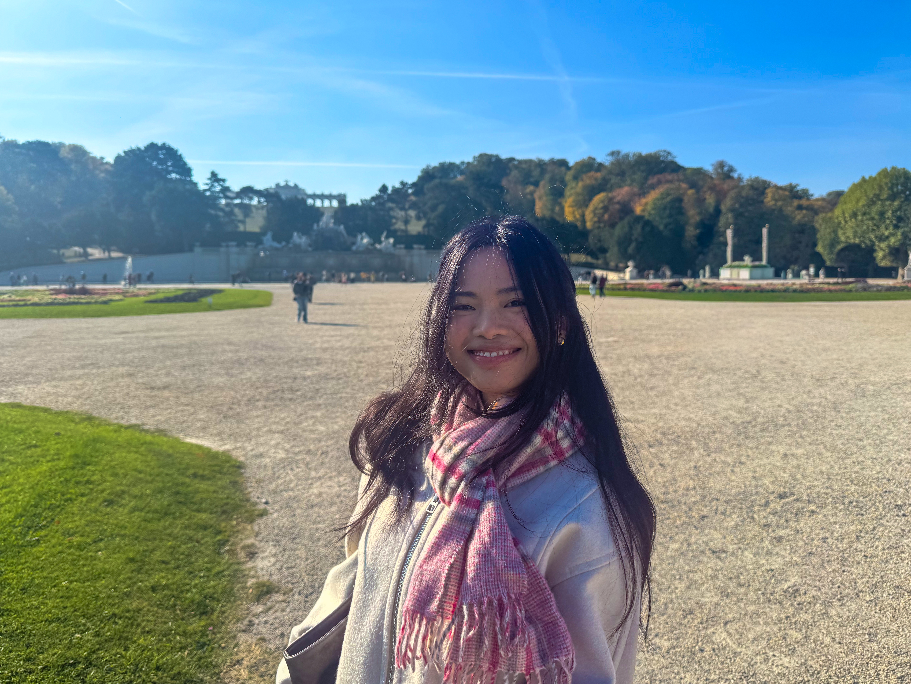

Welcome to my website!
I'm Abigail, and I have a background in mathematics from Lancaster University. I am passionate about pure mathematics, particularly analysis and probability, with some interest in discrete mathematics.
Having graduated in 2026, I now plan to pursue a master's in mathematics in 2027, specialising in probability theory and stochastic processes.
About this blog
I started this blog in August 2026 because I wanted a space to feature mathematics I find beautiful and intriguing, alongside occasional reflections on learning.
When I was in high school, I remember reading Conceptual Physics by Paul G. Hewitt and being fascinated by how much I could understand just by working through a textbook. That experience stayed with me, and I now want to challenge myself to do something similar, but in the field of mathematics.
As much as I appreciate the rigorous and formal nature of mathematics, I also believe in the importance of good mathematical exposition. I want to explore not only the results themselves, but also how mathematicians arrived at them: the ideas, intuitions and thought processes behind the proofs. To me, that is often the most satisfying part.
More about me
I am originally from the Philippines, where I grew up on the slopes of Mount Makiling in Laguna. England, however, has become my chosen home.
On the rare occasions I'm away from my whiteboard, I enjoy reading, trying new recipes, and discovering new cafés and restaurants.
Say hello
If something here sparks your interest, I'd love to hear from you. Feel free to get in touch.
